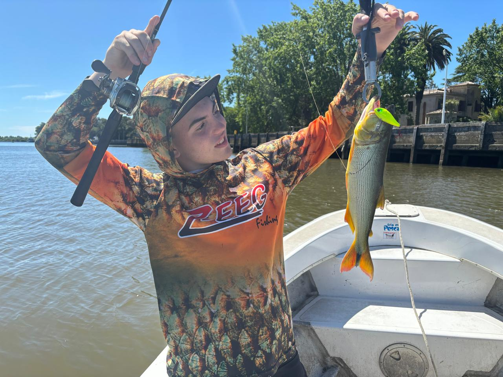

Bienvenidos a nuestras emocionantes excursiones de pesca en Berisso. Nuestra aventura comienza temprano, alrededor de las 8:00 a 8:15 hs, zarpando hacia las aguas en busca de la mejor captura del día. El tiempo de pesca se extiende hasta aproximadamente las 16:00 hs, aunque siempre quedará a criterio del guía decidir cuándo es el momento adecuado para iniciar el regreso a puerto, priorizando la seguridad de todos a bordo y las condiciones de navegación.
En nuestra excursión, no solo disfrutarás del servicio experto de nuestro guía, sino que también cubriremos el gasto total de combustible y proporcionaremos las carnadas y seba necesarias para la pesca. Recuerda traer tus propios equipos de pesca, aunque si necesitas alguno, no dudes en informarnos con anticipación.
Nuestras embarcaciones tienen capacidad para hasta 5 pescadores, con un mínimo de 4 personas para zarpar. Si no tienes un grupo completo, avísanos y haremos todo lo posible para organizar uno para ti, evitando costos adicionales.
Es importante tener en cuenta que Marinas del Sur cuenta con un estacionamiento privado y seguro dentro del predio, sin embargo, se aplica una tarifa de acceso de $ 500,00 por persona, que no está incluida en el costo de nuestra excursión.
Nos encontraremos en Marinas del Sur a las 7:45 hs para prepararnos adecuadamente antes de embarcar, llenar la planilla de despacho de la embarcación y resolver cualquier detalle necesario. El embarque se realizará entre las 8:00 hs y las 8:15 hs.
Para tu comodidad y seguridad, te recomendamos llevar protector solar, lentes de sol, gorra con visera (especialmente en verano), ropa abrigada y cómoda, y un traje de lluvia en caso de necesidad. Además, si es tu primera vez en el mar y tienes propensión a marearte, considera tomar Dramamine según las indicaciones médicas.
Nuestra jornada de pesca suele concluir alrededor de las 15:30 o 16:00 hs, aunque los horarios pueden variar según las condiciones climáticas y las decisiones del guía. Recuerda traer tus propias bebidas individuales y alimentos si deseas consumir de manera individual.
Para garantizar tu lugar en nuestras salidas, te recomendamos ponerte en contacto con nosotros con anticipación, especialmente durante la temporada alta. ¡Esperamos que te unas a nosotros para vivir una experiencia inolvidable de pesca!
Saludos y gracias por tu interés.